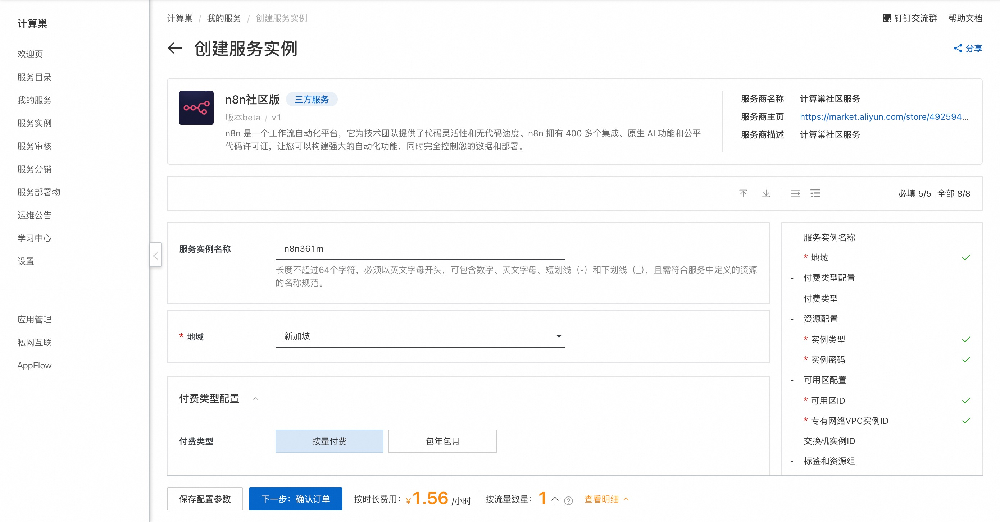
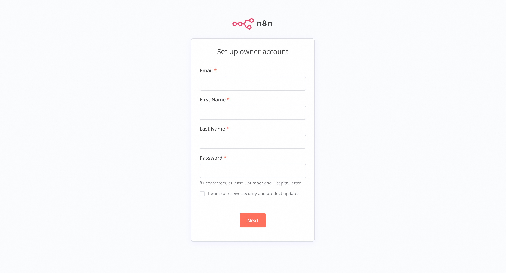

n8n社区版 快速部署
概述
n8n 是一个工作流自动化平台，它为技术团队提供了代码灵活性和无代码速度。n8n 拥有 400 多个集成、原生 AI 功能和公平代码许可证，让您可以构建强大的自动化功能，同时完全控制您的数据和部署。
前提条件
部署n8n社区版服务实例，需要对部分阿里云资源进行访问和创建操作。因此您的账号需要包含如下资源的权限。 说明：当您的账号是RAM账号时，才需要添加此权限。
| 权限策略名称 | 备注 |
|---|---|
| AliyunECSFullAccess | 管理云服务器服务（ECS）的权限 |
| AliyunVPCFullAccess | 管理专有网络（VPC）的权限 |
| AliyunROSFullAccess | 管理资源编排服务（ROS）的权限 |
| AliyunComputeNestUserFullAccess | 管理计算巢服务（ComputeNest）的用户侧权限 |
计费说明
n8n 社区版在计算巢部署的费用主要涉及：
- 所选vCPU与内存规格
- 系统盘类型及容量
- 公网带宽
部署流程
-
访问计算巢n8n社区版部署链接，按提示填写部署参数： 
-
参数填写完成后可以看到对应询价明细，确认参数后点击下一步：确认订单。
-
确认订单完成后同意服务协议并点击立即创建进入部署阶段。
-
等待部署完成后就可以开始使用服务，进入服务实例详情点击服务地址。

-
加载完成后即可使用n8n服务。 
使用帮助
更多用法请参考n8n官方文档。
© 2009-2022 Aliyun.com 版权所有